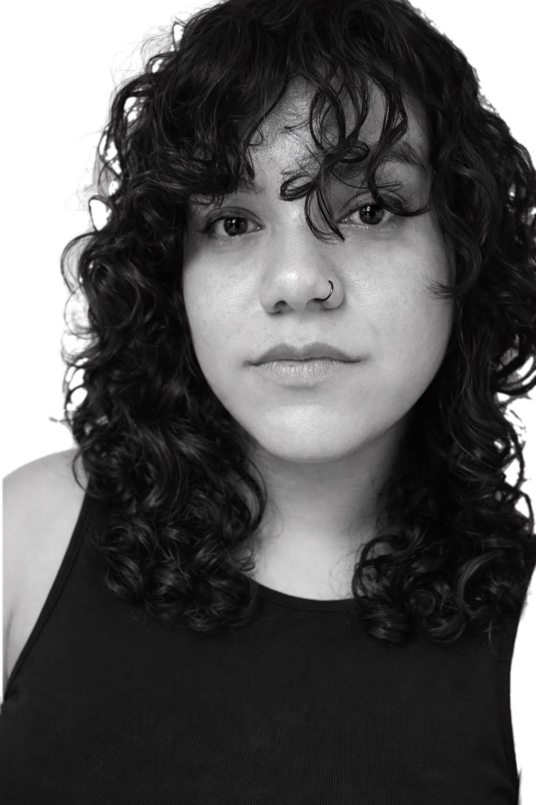

About me
La Mara is my design studio. I am a packaging designer specializing in creating brand experiences through customized packaging and products, using design as a strategic tool to strengthen brands' marketing, communication, and positioning strategies.
I also develop design and social development strategies in collaboration with nonprofit organizations, adapting design methodologies to work with communities.
